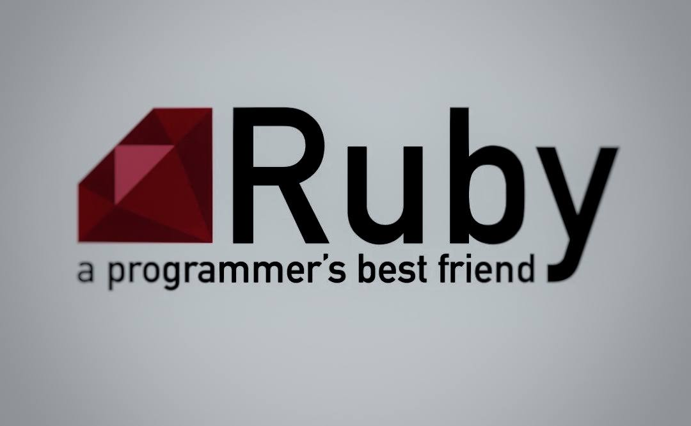

Ruby — это объектно-ориентированный язык общего назначения с динамической типизацией. Создатель Ruby — Юкихиро Мацумото (Matz) — интересовался языками программирования, ещё будучи студентом, но идея о разработке нового языка появилась позже.
Ruby начал разрабатываться 23 февраля 1993 года и вышел в свет в 1995 году. В Японии Ruby стал популярным с момента появления первой общедоступной версии в 1995 году, однако наличие документации только на японском языке сдерживало его дальнейшее распространение.
Лишь в 1997 году появилось описание Ruby на английском языке, а в 1998 году открылся форум «ruby-talk». Это положило начало росту известности языка в остальном мире. В начале 2000-х вышло несколько книг на английском языке, что способствовало росту популярности Ruby в Западной Европе и Америке.
В 2003 году была выпущена версия Ruby 1.8.0, а в 2005 году появился веб-фреймворк Ruby on Rails, написанный на Ruby и сразу завоевавший признание благодаря лёгкости построения на нём типичных веб-приложений. Ruby в нём является не только языком реализации самого фреймворка, но и языком описания решений (в частности, используются HTML-шаблоны с встроенным кодом на Ruby).
Стабильная версия Ruby 2.0 вышла в феврале 2013 года. 24 февраля 2014 года исполнился 21 год с момента анонса языка программирования Ruby. Такое событие разработчики решили отметить выпуском патча для Ruby 2.1, который назвали
Ruby 2.1.1. В конце 2018 года вышел Ruby 2.6, где реализована JIT-компиляция. Сейчас Ruby входит в большинство дистрибутивов Linux, поставляется вместе с Mac OS X, доступен пользователям других операционных систем.
Ruby — полностью объектно-ориентированный язык. В нём все данные являются объектами, в отличие от многих других языков, где существуют примитивные типы. Каждая функция — метод.
Любая конструкция в Ruby возвращает значение. Ruby использует вызов по соиспользованию (подразумевает, что значения в языке основаны на объектах, а не на примитивных типах. При вызове по соиспользованию функция получает копию ссылки на объект. Сам объект не копируется — он оказывается соиспользуемым или разделяемым. Как следствие, присваивание аргументу в теле функции не имеет эффекта в вызывающем её контексте, но присваивание компонентам этого аргумента — имеет.), хотя в сообществе Ruby часто говорят, что он использует вызов по ссылке. Для программиста, привыкшего к распространённым гибридным языкам программирования, некоторые эффекты такого решения могут показаться неожиданными.
Механизм присваивания действует одинаково для всех объектов, в отличие от языков типа Object Pascal, где присваивание может означать как копирование значения, так и копирование ссылки на значение. Ruby не поддерживает множественное наследование, но вместо него есть мощный механизм примесей. Все классы (напрямую или через другие классы) выведены из класса Object, следовательно, любой объект может использовать определённые в нём методы. Процедурный стиль также поддерживается, но все глобальные процедуры неявно являются закрытыми методами класса Object.
Ruby является мультипарадигменным языком: он поддерживает процедурный стиль (определение функций и переменных вне классов), объектно-ориентированный (всё — объект), функциональный (анонимные функции, замыкания, возврат значения всеми инструкциями, возврат функцией последнего вычисленного значения). Он поддерживает рефлексию, метапрограммирование, информацию о типах переменных на стадии выполнения.
|
def get_numbers(list, index = 0, taken = []) return [taken] if index == list.size |
Ruby появился на свет, когда Юкихиро Мацумото захотел создать язык сценариев, более мощный, чем Perl, и более объектно-ориентированный, чем Python.
Название Ruby для языка появилось во время онлайн-чата между Мацумото и Кейджу Ишицукой 24 февраля 1993 года, еще до того, как на этом языке был написан какой-либо код. Изначально были предложены два названия - Coral или Ruby. Позже Мацумото выбрал Ruby в электронном письме Ишицуке.
Ruby часто путают с Ruby on Rails, который представляет собой серверный фреймворк, написанный на Ruby по лицензии MIT для реализации веб-приложений.
Управление библиотеками и пакетами Ruby осуществляется через центральную систему управления библиотеками Rubygems.
Ruby поддерживает множество парадигм программирования, таких как процедурное программирование, объектно-ориентированное программирование, а также функциональное программирование, что делает его уникальным в мире программирования.
Интерпретатор Ruby (Интерактивный Ruby / irb) можно использовать как калькулятор.
В Ruby встроена поддержка рациональных и комплексных чисел, что помогает в решении сложных математических задач.
Ruby позволяет встраивать код. Например, Ruby может быть встроен в язык гипертекстовой разметки (HTML).
Пользователи Ruby могут воспользоваться преимуществами динамического набора текста и Duck typing.
Ruby понимает и использует "nil” вместо “null”.
| № | преимущества Ruby | недостатки Ruby |
|---|---|---|
| 1 | Ориентированность на человека | Сложность освоения |
| 2 | Лаконичность и изящество | Низкая производительность |
| 3 | Многофункциональность | Большие затраты ресурсов |
| 4 | Стабильная ниша | Отсутствие обратной совместимости |
| 5 | Востребованность | Неполная многопоточность |